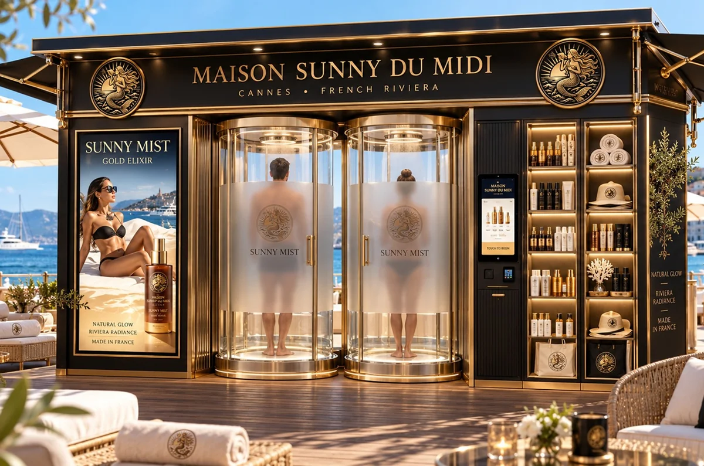

01SUNNY MIST RESORT
Hotels and resorts
A fresh approach to hospitality. A skincare pavilion by the pool, in the spa or at a beach club, with private treatment booths and a cosmetics display.
Luxury hotels · Holiday resorts · Beach clubs
Explore the hotel concept